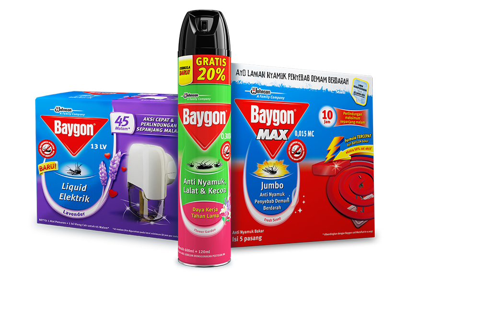

Baygon
Baygon adalah merek pestisida produksi S. C. Johnson & Son. Kegunaannya adalah sebagai pembasmi dan pengendali handalan rumah tangga, seperti nyamuk, kecoa, lipan, dan semut.
Keunggulan:
- Bunuh nyamuk mati dalam 5 detik dengan semprotan langsung dan wangi Flower Garden
- Perlindungan 16 jam dari nyamuk Aedes aegypti
- Formula lebih cepat dari Baygon untuk bunuh nyamuk dibandingkan formula 0,161 AE,
bahkan untuk bunuh nyamuk tersembunyi
